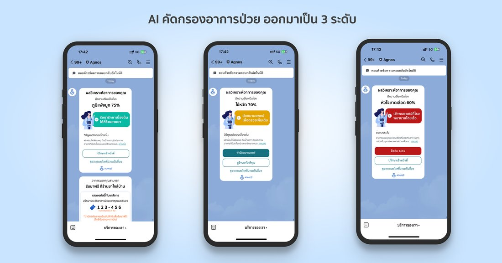

03 / 04
จากพาร์ทเนอร์ภาครัฐ
สู่ผู้ใช้งานหลักหมื่นบน LINE OA
Agnos Health · B2C Platform Growth · LINE OA
แปลงพาร์ทเนอร์ชิปภาครัฐด้านสุขภาพให้กลายเป็นแคมเปญครบวงจร ที่เร่งการเติบโตของผู้ใช้งาน LINE OA ผ่านการสื่อสารแคมเปญ การออกแบบ user journey การทำ earned media และการขับเคลื่อนผ่าน micro-influencer — สร้างการเติบโตของแพลตฟอร์ม B2C ที่วัดผลได้จริง
Project RoleB2C Platform Growth · Campaign Communications & Distribution
พาร์ทเนอร์หลักสำนักการแพทย์ กทม. × UMSC × พฤกษา
ช่วงเวลา2023 → 2024
บทบาทและความเป็นเจ้าของงาน
- แปลงแคมเปญพาร์ทเนอร์ชิปภาครัฐด้านสุขภาพให้กลายเป็นการสื่อสารการตลาดแบบครบวงจร ที่ขับเคลื่อนการเติบโตของผู้ใช้งาน LINE OA
- ร่วมกับทีมออกแบบเส้นทางประสบการณ์ผู้ใช้ (LINE OA User Journey) และจุดสัมผัส UX สำคัญ ตั้งแต่การแอดเพื่อนครั้งแรกจนถึงการคัดกรองอาการด้วย AI เพื่อให้เข้าถึงและใช้งานง่ายขึ้น
- สร้างสรรค์การสื่อสารแคมเปญ — รวมถึงบทความ PR ประกาศ และคอนเทนต์แคมเปญ — สำหรับแคมเปญพาร์ทเนอร์ชิปด้านสุขภาพปี 2024
- คัดเลือก ประสานงาน และบรีฟ micro-influencers ด้วยตนเองเพื่อขยายการรับรู้แคมเปญช่วงเปิดตัวปี 2024
- นำทีมประสานงานสื่อมวลชน (Press Outreach) จนเกิด Earned Media ข้ามหลายสำนักข่าวทั้งสายสุขภาพและสื่อกระแสหลัก
โจทย์
Agnos ขยายบริการมาสู่ LINE OA เพื่อให้การคัดกรองอาการด้วย AI เข้าถึงง่ายขึ้น ด้วยการตัดอุปสรรคอย่างการดาวน์โหลดแอปและการล็อกอินซ้ำซาก
แม้แอปพลิเคชันเดิมจะยังใช้งานได้อยู่ แต่ LINE OA กลายเป็นช่องทางที่มี friction ต่ำกว่าในการเข้าถึงคนกลุ่มใหญ่ขึ้น
แต่การเปิดช่องทางใหม่เพียงอย่างเดียวไม่เพียงพอที่จะสร้างการใช้งาน โดยเฉพาะสำหรับสตาร์ทอัพที่มีทรัพยากรการตลาดและงบโฆษณาจำกัด
โจทย์ด้านการตลาดคือ: ทำอย่างไรให้แคมเปญพาร์ทเนอร์ชิปภาครัฐด้านสุขภาพ กลายเป็นการเติบโตของแพลตฟอร์มที่วัดผลได้จริง —
กระตุ้นให้คนรู้จักบริการ แอด LINE OA และคัดกรองอาการด้วย AI จนจบเส้นทาง
แนวทาง
แทนที่จะพึ่งพางบโฆษณา ฉันพัฒนาแคมเปญการสื่อสารแบบครบวงจรบนพื้นฐานพาร์ทเนอร์ชิปภาครัฐด้านสุขภาพที่มีอยู่แล้ว
ผสาน PR, Earned Media, วิดีโอสาธิตบริการ, ความร่วมมือกับ micro-influencer และการออกแบบเส้นทาง LINE OA ให้ลื่นไหล
เพื่อขับเคลื่อนการใช้งานแพลตฟอร์ม
ในธุรกิจสุขภาพ ความเชื่อใจมีผลต่อการตัดสินใจใช้งานอย่างมาก แทนที่จะแข่งขันด้วยงบสื่อ แคมเปญนี้ใช้ความน่าเชื่อถือของพาร์ทเนอร์ภาครัฐที่ได้รับความไว้วางใจอยู่แล้ว
ทั้งสำนักการแพทย์ กทม. และ UMSC บทบาทของฉันคือแปลความร่วมมือนั้นให้กลายเป็นการสื่อสารที่ชัดเจนและเข้าถึงง่าย
กระตุ้นให้ผู้คนอยากรู้จักและใช้บริการ LINE OA ใหม่นี้
สิ่งที่สร้างขึ้น
01 Simplified LINE OA User Journey
ร่วมกับทีมออกแบบเส้นทาง LINE OA และจุดสัมผัส UX สำคัญ — รวมถึง flow ฝั่งร้านขายยา (Pharmacy), LINE Flex Message และหน้าจอแสดงผล AI — เพื่อลดความสะดุดตั้งแต่การมีปฏิสัมพันธ์ครั้งแรกจนถึงการคัดกรองอาการด้วย AI

หน้าจอผล AI คัดกรองอาการบน LINE OA แบ่งความเสี่ยงเป็น 3 ระดับ เพื่อแนะนำขั้นตอนถัดไปที่เหมาะสม
02 Campaign Communications
เขียนประกาศแคมเปญ บทความ PR และคอนเทนต์สำหรับสาธารณะ ที่แปลความซับซ้อนของโครงการสุขภาพให้กลายเป็นการสื่อสารที่ชัดเจนและเข้าถึงง่ายสำหรับประชาชนทั่วไป
03 Campaign Content Production
ผลิตชิ้นงานสื่อสาร รวมถึงวิดีโอสาธิตบริการและสื่อสนับสนุนแคมเปญ เพื่อช่วยให้คนเข้าใจบริการและกระตุ้นให้แอด LINE OA
04 Earned Media & Influencer Activation
ประสานงานความร่วมมือกับ micro-influencer และนำทีมประสานงานสื่อมวลชน จนขยายการเข้าถึงแคมเปญผ่านเสียงที่น่าเชื่อถือและ Earned Media
ผลลัพธ์และตัวเลขจริงจากระบบ
การเติบโตของเพื่อนใน LINE OA สอดคล้องกับแคมเปญที่ขับเคลื่อนอย่างแม่นยำ ไม่ใช่การเติบโตแบบบังเอิญ:
บทสรุปภาพรวม
โปรเจกต์นี้เป็นหลักฐานเชิงประจักษ์ว่า การทำตลาดโดยแทบไม่มีงบโฆษณา ก็ยังสร้างตัวเลขในสเกลระดับชาติได้
หากเลือกช่องทางที่ถูกต้อง (เลือก LINE OA แทนการบังคับโหลดแอป) และใช้พาร์ทเนอร์ภาครัฐ Earned Media และ KOLs ขับเคลื่อนอย่างมีกลยุทธ์
บทเรียนที่ติดตัวจากเคสนี้: สตาร์ทอัพที่งบน้อยไม่ได้แข่งกันที่ว่าใครยิงแอดเก่งกว่า
แต่แข่งกันที่ว่าใครมองเห็นความน่าเชื่อถือที่มีอยู่แล้วในระบบ แล้วเข้าไปเป็นส่วนหนึ่งของมันได้ก่อน
สิ่งที่ได้เรียนรู้
- Channel Friction กำหนดการ Adoption: การเลือกช่องทางที่คนคุ้นเคย (LINE OA) ลดอุปสรรคในการเข้าใช้งานได้ดีกว่าการบังคับให้โหลดแอปใหม่
- พาร์ทเนอร์ภาครัฐสเกล Trust ได้ทันที: การร่วมมือกับภาครัฐไม่ใช่แค่ PR แต่เป็นการยืมความน่าเชื่อถือระดับชาติมาขับเคลื่อนการเติบโตของสตาร์ทอัพ
- Earned Media ชนะ Paid Ads ในธุรกิจสุขภาพ: ข่าวสารที่บอกเล่าผ่านสื่อและผู้เชี่ยวชาญสร้างความน่าเชื่อถือและดึงผู้ใช้ได้ทรงพลังกว่าการยิงแอดทั่วไป
▶ ดูวิดีโอสาธิตบริการบน YouTube →
03 / 04
From Campaign Execution
to B2C Platform Growth
Agnos Health · B2C Platform Growth · LINE OA
Translated a government healthcare partnership into an integrated campaign that accelerated LINE OA adoption through campaign communications, user journey design, earned media, and micro-influencer activation—driving measurable B2C platform growth.
Project RoleB2C Platform Growth · Campaign Communications & Distribution
Key StakeholdersBMA Medical Service Department × UMSC
× Pruksa
Period2023 → 2024
Role & Ownership
- Translated government healthcare partnership campaigns into integrated marketing communications that drove LINE OA adoption.
- Worked with the team to design the LINE OA user journey and supporting UX touchpoints—from first add-friend to AI symptom screening—making the service easier to access and navigate.
- Created campaign communications—including PR articles, announcements, and campaign content—for the 2024 healthcare partnership campaign.
- Sourced, coordinated, and briefed micro influencers to expand campaign reach during the 2024 launch.
- Led press outreach that secured earned media coverage across multiple healthcare and mainstream media outlets.
Challenge
As Agnos expanded its services to LINE OA, the goal was to make AI symptom screening more accessible by removing barriers such as app downloads and
repeated logins. While the mobile app remained available, LINE OA became a lower-friction entry point for reaching more people.
However, launching a new channel alone wasn't enough to drive adoption—especially for a startup with limited marketing resources
and a limited advertising budget.
The marketing challenge was turning government healthcare campaigns into measurable platform growth: encouraging people to discover the service,
add the LINE OA, and complete the AI symptom screening journey.
Approach
Instead of relying on paid advertising, I developed an integrated communication campaign around an existing government healthcare partnership
into an integrated communication campaign—combining PR, earned media, service demo videos, micro-influencer collaboration, and a streamlined
LINE OA journey to drive platform adoption.
In healthcare, trust strongly influences adoption. Rather than competing through media spend, the campaign leveraged the credibility of trusted
public-sector partners, including the Bangkok Metropolitan Administration and UMSC. My role was to translate that partnership into clear,
accessible communication that encouraged people to discover and use the new LINE OA service.
What I Built
01 Simplified LINE OA User Journey
Worked with the team to design the LINE OA journey and key UX touchpoints—including pharmacy flows, LINE Flex Messages, and AI result screens—to reduce friction from first interaction to AI symptom screening.
AI screening result screens on LINE OA, tiered into 3 risk levels to guide the patient's next step
02 Campaign Communications
Wrote campaign announcements, PR articles, and public-facing content that translated complex healthcare initiatives into clear, accessible communication for the general public.
03 Campaign Content Production
Produced communication assets—including service demonstration videos and supporting campaign materials—to help people understand the service and encourage LINE OA adoption.
04 Earned Media & Influencer Activation
Coordinated micro-influencer collaborations and led press outreach that expanded campaign reach through trusted voices and earned media.
Impact & Real Platform Numbers
The 2024 campaign delivered measurable growth in LINE OA adoption through integrated campaign execution.
Outcome
This project showed that meaningful platform growth doesn't always require a large advertising budget. By connecting trusted partnerships
with clear communication, user experience, and campaign execution, the project drove measurable growth in LINE OA adoption.
The biggest lesson: limited budgets don't always limit growth. When trust already exists, marketing's role is to make services easier to discover,
understand, and adopt.
Key Learnings
- Channel friction determines adoption: picking a familiar channel (LINE OA) lowers the barrier to entry better than forcing users to download a new app.
- Trusted partnerships accelerate adoption: when public trust already exists, marketing can focus on making services easier to understand and access.
- Earned media beats paid ads in healthcare: stories told through media and experts build credibility and pull users more powerfully than commercial ad buys.
▶ Watch the service demo on YouTube →